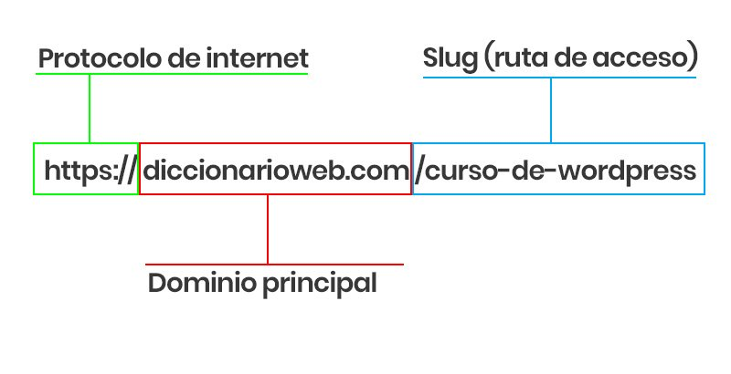

¿Cuál es la diferencia entre Internet y la World Wide Web? Internet es la red de computadoras con la cual accedes a la web que son las páginas en el internet.
¿Cuáles son las partes de un URL?
¿Cuál es el propósito de los métodos HTTP: GET, HEAD, POST, PUT, PATCH, DELETE? Permiten comunicar al servidor lo que se quiere hacer
¿Qué método HTTP se debe utilizar al enviar un formulario HTML, por ejemplo cuando ingresas tu usuario y contraseña en algún sitio?GET
¿Qué método HTTP se utiliza cuando a través de un navegador web se accede a una página a través de un URL? POST
Un servidor web devuelve una respuesta HTTP con código 200. ¿Qué significa esto?GET
¿Es responsabilidad del desarrollador corregir un sitio web si un usuario reporta que intentó acceder al sitio y se encontró con un error 404?Si
¿Es responsabilidad del desarrollador corregir un sitio web si un usuario reporta que intentó acceder al sitio y se encontró con un error 500? GET
¿Qué significa que un atributo HTML5 esté depreciado o desaprobado (deprecated)?GET
¿Cuáles son las diferencias principales entre HTML 4 y HTML5?Si
¿Qué componentes de estructura y estilo tiene una tabla?Si
¿Cuáles son los principales controles de una forma HTML5?Si
¿Qué tanto soporte HTML5 tiene el navegador que utilizas?Si